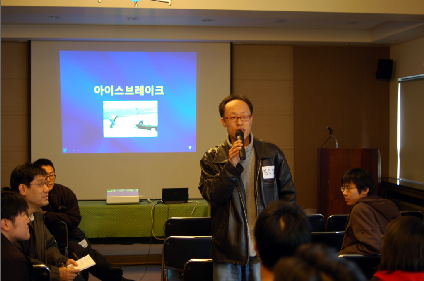
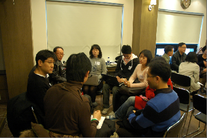

POSTS
제5회 난상토론회 - 온라인 롱테일의 끄트머리 어디쯤 흩어저 있던 있던 사람들이 오프라인에 모였습니다.
류소장님의 말씀처럼 토론기술이 부족한 탓에
토론의 질은 높다고 볼 수 없지 않나 생각합니다.
그러나,
주체적으로 움직이는 튼튼한 지성들이 서로의 필요로 강결합 했을 때
어떤 시너지를 발휘할 수 있을 지 짐작케 합니다.
(후원의 양과 질로 측정해 볼때 ㅋㅋ…)
이런… 그렇다면 아직 우리에게 희망이 있는 건가요?

제가 가지고 온 얼음을 열심히 깨고 있는 중…(아이스 브레이크)

제가 참여한 첫번째 토론 ‘예술과 웹’
http://www.onoffmix.com/e/smartplace/53